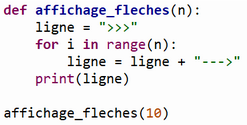
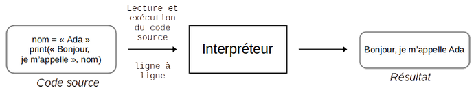
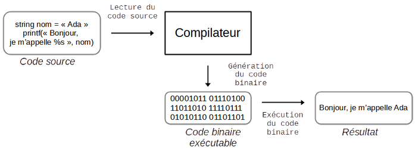
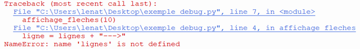
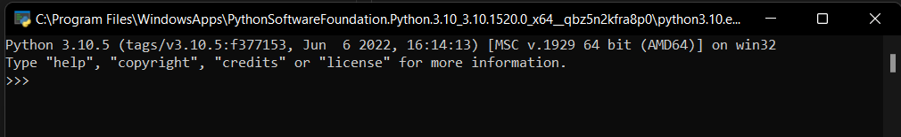
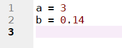

I. Les langages de programmation¶
Cours¶
A. Constructions élémentaires¶
A.1. Eléments communs aux différents langages¶
Un programme est constitué d'éléments de base, aussi appelées constructions élémentaires.
- les affectations
- les instructions conditionnelles
- les boucles non-bornées
- les boucles bornées
- les appels de fonctions
Ces éléments de base sont identifiés grâce à des mots-clés du langage utilisé et à une syntaxe (une manière d'écrire).
A.2. Syntaxe de différents langages¶
Fonction renvoyant le maximum entre 2 nombres en langage C
Code
int maximum(int a, int b) {
if (a>b) { return a; } else { return b; }
}
1. Rappeler comment écrire la même fonction en Python.
Code
def maximum(a, b):
if a>b:
return a
else:
return b
2. Identifier la syntaxe utilisée en C pour écrire les éléments de programmation que vous connaissez.
Les mots-clés if et else sont identiques mais le def n'est pas utilisé en C. A la place, on donne le type du résultat, et le type des paramètres est indiqué aussi.
On n'utilise pas l'indentation pour délimiter les différentes parties du code en C, mais des { et }. La fin d'une instruction est indiquée avec le ;.
B. Le langage Python¶
B.1. Syntaxe et éditeur¶
Cette syntaxe est connue des logiciels permettant de faire du Python, qui utilisent un code couleur pour identifier les différents éléments d'un programme.
Exemple :
Affichage de caractères représentant une flèche n fois avec une fonction affichage_fleches(n), code enregistré dans l'éditeur de Thonny.

Expliquer ce à quoi correspond le code de couleur (quels éléments sont d'une même couleur ? d'une couleur différente ?).
Les mots-clés sont identifiés par une couleur, le nom d'une fonction dans sa définition aussi. Les différents types de valeurs ont leur couleur (différente ici pour les entiers et les caractères), alors que les variables s'affichent en noir. C'est aussi le cas pour les appels de fonction.
B.2. Caractéristiques du langage¶
B.2.a. Langages interprétés et compilés¶
Python est un langage interprété : c'est-à-dire que le code est lu au fur et à mesure, exécuté au fur et à mesure, jusqu'à ce qu'une erreur soit rencontrée qui arrête le programme, ou bien que l'on arrive à la fin sans erreur.
D'autres langages peuvent fonctionner différemment : par exemple en C, le programme est compilé, c'est-à-dire qu'il est analysé du début à la fin, et la liste totale des erreurs trouvées s'affiche à la fin. Dans ce cas, le programme est traduit dans un langage que la machine comprend le langage machine.
 
Quels avantages/inconvénients y a-t-il à utiliser un langage interprété ?
Un langage interprété est plus simple à exécuter (un seul fichier est manipulé), mais il est possible de devoir exécuter plusieurs fois un programme avant qu'il soit sans erreur, vu qu'on ne les a pas toutes en une fois.
B.2.b. Langages de haut et bas niveau¶
Plus le langage est proche du langage machine, plus il est dit "de bas niveau". S'il est plus proche du langage naturel, il est dit "de haut niveau". Python, comme le C, est un langage de haut niveau.
B.3. Gestion des erreurs¶
L'IDE Python donne des informations sur chaque erreur trouvée : le numéro de ligne sur laquelle elle devrait être (ceci n'est pas toujours exact !), et un message d'erreur donnant des indications est affiché.
Exemple
Expliquer l'erreur dans le programme qui a généré l'exécution suivante :

Solution
La variable lignes n'est pas connue. Elle est utilisée dans une variable ligne, il s'agit probablement d'une faute de frappe. L'erreur se trouve sur la ligne 4 de la fonction affichage_fleches, elle a été provoquée lors de l'appel à la fonction ligne 7.
TP : Prise en main d'un IDE Python¶
Il est possible de faire du Python sur son ordinateur à partir de différents logiciels :
- de la console Python (disponible dès qu'une version de Python a été installée sur l'ordinateur),
- d'un environnement de développement intégré (IDE) : un logiciel qui rassemble tous les outils nécessaires au développement de code sur une même interface graphique. Par exemple : Thonny, Spyder, EduPython, Pyzo, etc.
I. La console¶
Une console permet d'exécuter du code ligne à ligne. Elle se trouve en recherchant "Python" sur votre ordinateur, et se présente ainsi :

Il suffit d'écrire une instruction, et d'appuyer sur Entrée pour que le code soit traduit dans un langage que la machine comprend, et directement exécuté.
- Ecrire l'instruction :
a = 3puisEntrée. - Taper
asur la ligne suivante, puisEntrée. Vous visualisez le contenu de la variablea. - Ecrire l'instruction qui permet d'affecter la valeur
0.14à une variableb. - Ecrire l'instruction qui ajoute les valeurs de
aet debet stocke le résultat dans une variablepi. - Vérifier que la variable
picontient bien la valeur3.14. - Que faut-il faire si l'on veut en fait affecter
0.14àa,3àb, et que l'on veut refaire le même calcul pour le stocker danspi?
II. Utilisation d'un IDE¶
Pour éviter d'avoir toujours à réécrire les mêmes instructions dès que l'on veut modifier quelque chose, on utilise un éditeur. Il permet d'écrire plusieurs lignes de code sans les exécuter directement, mais d'exécuter l'ensemble lorsqu'on veut le tester, et de sauvegarder le code. Les numéros des lignes sont généralement indiqués sur la gauche :

Dans un IDE, il y a une partie éditeur et une partie console. On écrit le code dans l'éditeur, et on peut faire des opérations simples comme des tests (consulter le contenu d'une variable), avec la console.
-
Recopier dans l'éditeur de votre IDE la fonction suivante :
Code
def addition(a,b): return a+bEnregistrer votre fichier avec Fichier > Enregistrer sous, dans votre répertoire personnel, dossier NSI. Son nom doit être
TP_IDE.py(l'extension.pycorrespond au format d'un fichier Python). -
Exécuter le code en cliquant sur la flèche verte en haut du logiciel.
-
Pour tester la fonction, écrire l'appel suivant dans la console et vérifier que l'on obtient le bon résultat :
addition(13, 24) >>> 37 -
Ecrire la fonction suivante dans l'éditeur, à la suite de la première, et exécuter le code :
Code
def soustraction(a,b): return a-b -
Pour tester la fonction, écrire l'appel suivant dans la console et vérifier que l'on obtient le bon résultat :
soustraction(13, 24) >>> -11 -
A la suite de la définition des fonctions dans l'éditeur, ajouter un programme principal dans lequel on utilise les fonctions que l'on a définies, et exécuter le code :
Code
valeur = 4 somme = addition(valeur, valeur) difference = soustraction(somme, valeur) -
Rien ne doit s'afficher dans la console, mais les calculs ont été faits. Vérifier le contenu des variables
sommeetdifferenceen tappant leur nom dans la console.
Ne pas oublier d'enregistrer votre travail.
Conclusion¶
Quel est l'intérêt d'utiliser un IDE Python pour écrire du code ? (à écrire en conclusion du TP dans votre cahier de TP).
TP : Fonctions et portée d'une variable¶
Créer un nouveau fichier dans votre dossier NSI, dossier seq4, appelé TP_Portee_Variable.py
Ecrire les réponses aux questions dans votre cahier de TP.
-
Exécuter le programme suivant, en écrivant le code dans l'éditeur :
Code
def mystere(a): p = 1 for i in range(a): p = 2*p return pEssayer à présent de visualiser le contenu de la variable
aavec la console. Que remarquez-vous ?Une variable utilisée dans une fonction n'est pas accessible en dehors de la définition de la fonction. Elle n'existe que dans celle-ci ! C'est ce qu'on appelle une variable locale.
-
Exécuter le programme suivant :
Code
a = 4 def mystere(): p = 1 for i in range(a): p = 2*p return pEssayer à nouveau d'accéder à la valeur de la variable
a. Que constatez-vous ?Si une variable est définie en dehors d'une fonction, elle peut être utilisées dans celle-ci sans avoir besoin de la passer en paramètre de la fonction. C'est une variable globale. Attention ! Cette pratique a beaucoup d'inconvénients (dur de maîtriser l'effet d'une fonction utilisant des variables pouvant être modifiées un peu partout...).
-
Une variable
adéfinie en dehors d'une fonction est donc différente d'une variableadéfinie à l'intérieur de celle-ci. Pour appeler une fonction, ils y a donc différentes possibilités dans l'appelation des variables utilisées en paramètres.Tester le code suivant :
Code
def mystere(a): p = 1 for i in range(a): p = 2*p return p a = 5 p1 = mystere(a) b = 5 p2 = mystere(b)Quelle est la différence entre les deux appels de
mystere? -
On peut comprendre ce que fait une fonction en analysant son code, en observant ses résultats, ou bien en décrivant pas à pas ce qu'elle fait. Une première manière assez simple de le faire est de rajouter des affichages dans le code à des endroits stratégiques : classiquement à l'intérieur des boucles pour voir comment les valeurs des variables varient. Modifier votre code pour rajouter l'affichage de
pcomme ci-dessous :Code
def mystere(a): p = 1 for i in range(a): p = 2*p print(p) return p a = 5 p = mystere(a)Reporter la liste des valeurs prises par
p, qui s'affichent dans la console après exécution. -
Pour avoir une idée plus précise et plus complètes des valeurs prises par les variables, on utilise une table de trace. Sur ordinateur, des outils de visualisation existent, comme Pythontutor (le lien est cliquable).
Copier/coller votre code sur ce site (sans l'affichage de la question précédente), et l'exécuter étape par étape (en cliquant sur "Visualize Execution", puis successivement sur "Next"). Utiliser cet outil pour remplir la table de trace de ce code, avec les différentes valeurs des variablesa,p, eti.
En conclure ce que fait la fonctionmystere.